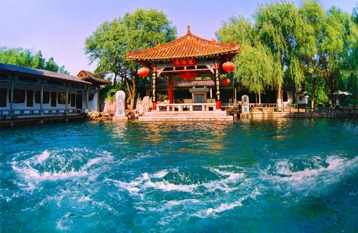

- Baotu Spring
-

Located in the center of Jinan city and occupying 10.5 hectares, Baotu Spring Garden has a history of more than 3,500 years. It is known in China as the No 1 spring of the 72 in Jinan, "the spring city". The maximum water in peak period reaches 240,000 cubic meters a day. Three springs pour forth large quantities of water, creating the peculiar scenery of "Baotu suspended in air", which is one of the Eight Sceneries of Jinan. Being a national 4A scenic spot, Baotu Spring Garden is also famous at home and abroad as an important destination for travelers.